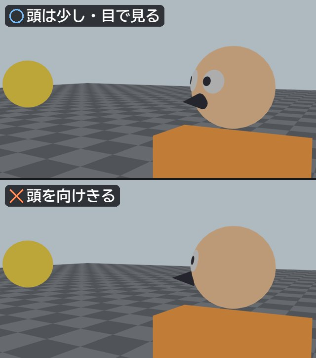
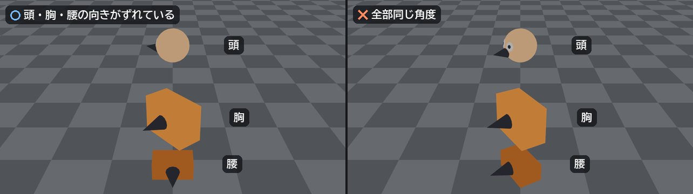

動きの質を決定するから
キーポーズがしっかりしていれば、
中割り（補間）の段階でも
良い動きが生まれやすい。
逆にキーポーズが弱い場合
- 動きが曖昧になる
- 重さやスピード感が出ない
- 何をしているのか分かりにくい
+9の授業 ／ 座学 06
アニメーションの中で最も重要な
動きの節目となるポーズのこと。
例
これらの重要な瞬間を
抜き出したものがキーポーズ。
ポージングはアニメーターにとって
表現の基礎であり、
モデラーにとっても
関節位置を理解するための
重要な土台。
重心や骨盤、肩のライン、
体幹の捻りなどを意識することで、
多様な表情や動きを生み出すことができる。
なぜキーポーズが重要？
動きの質を決定するから
キーポーズがしっかりしていれば、
中割り（補間）の段階でも
良い動きが生まれやすい。
逆にキーポーズが弱い場合
意図や演技を明確に伝えるため
キーポーズは単なる形ではなく、
キャラクターの「意思」や「感情」を
最も強く表現する瞬間。
例
観客はキーポーズで
「何が起きているか」を理解する。
作業効率を上げるため
最初にキーポーズを設計することで
「いきなり全部動かす」よりも圧倒的に効率的。
タイミング・テンポ（リズム）を
作る基準になる
キーポーズ間の間隔によって
大きく以下の3つが決まる。
アニメーションの「気持ちよさ」はここで決まる。
初級（演習02）では、「静」と「動」のポーズで
重心・骨格・シルエットを意識する。
中級（演習03）では、そのポーズに
「説得力」を持たせることを目指す。
どんなアニメーション（モーション）でも、
ポーズがキマっていなかったら△。
動いた状態がいくらそれっぽく見えていても、
まずまず止まりの評価になる。
逆に、キマっているポーズからポーズへ繋げるだけで、
そこそこの見え方にはなる。
モーションキャプチャーが主流の現場でも、
ポーズを調整することは多々ある。
キーポーズをつける上での鉄則
キーポーズの付け方、考え方
まずは「何を伝える
ポーズなのか？」を決める
ひとえにポーズと言っても、
「正解はこれ！」と示せるものではない。
この辺りの勘所は、
実践で覚えていくのが一番良い。
ポーズをつける時のセオリー
重心・骨格・シルエットは、上の
「キーポーズをつける上での鉄則」を参照
ポーズを整える順番
大体の動きは骨盤（腰）が基盤になるため、
根元から先端へ向かって整える。
まずここから。
全身の土台になる
空中の動きが多いなら体幹から、
地上の動きが多いなら下半身から
顎を出しているのか、引いているのか？
視線はどこを見ているのか？
鎖骨 → 手の位置 → 肘の向き →
手首の回転 の順
動きを観察する
説得力のあるポーズを作るには、
動きに対する観察力が非常に問われる。
人型のキャラクターを作ることが最も多いため、
人体構造（骨や筋肉）や運動への理解が深いと、
とても有利。
まずは椅子から立って、
自分が動いてみる
デスクワークだと、
どうしても椅子の上で動きを確認しがち。
動画などで自分の動きをチェックして、
トライ＆エラーを繰り返すことは、
ビューポート上で動くキャラを調整することと、
根本的な部分で共通する。
現実通りが正解ではない。
絵的な嘘はついても良いが、
説得力の無さは問題。
「見せるための嘘」を参照座学 0312原則のポイント
リファレンスからポーズをつける
リファレンスの読み取り方
同じ角度から合わせる
まずはビューポートを
写真と同じ高さ・向きにして、
見た目を合わせる
その後に回して確認（上の鉄則）
前後の情報には気をつける
画角などによっては
手や足の位置が読み難いので、
実際にそのポーズを自分が取ってみることも重要
服や髪の下の骨を追う
写真の輪郭は、服や髪の形。
隠れている骨盤・膝・肘の位置を
推測して合わせる
触れている所を優先する
手が顔や膝に触れている、
足裏が地面に着いている、
などの接点は、体型が違ってもずらさない
全身の形
体重が乗っている側
立ちポーズでは、
体重が乗った足の側の骨盤が上がり、
肩のラインは逆向きに傾きやすい。
これが立ち姿の自然さになる
この立ち方を「コントラポスト」と呼ぶ
左右対称にしない
両腕・両脚が同じ角度、同じ高さだと、
人形のように硬く見える。
写真が左右対称に見えても、
実際は少しずつズレている
全身を通る流れ
頭から足先まで
1本の流れ（カーブ）が通っていると、
ポーズの勢いや向きが伝わりやすい
この流れを
「ライン・オブ・アクション」と呼ぶ
頭・腕・指
頭と目線
見ている対象へ、
頭を向けきってしまう人が多い。
目線（目の向き）も考えて、
頭の角度を決める

アクロバットの時の頭の向きは、特に間違えやすい
肘と手首
躍動感を出したい時は、
肘（脇）の動きを意識する。
手首の回転で、
力強さ・しなやかさ・スタイリッシュさなど、
テイストに合った形をつける
指
一軸しか回さない人も多い。
第一関節と第二関節を
同じ曲がり方にしない。
何気ない拳の握り方でも、
指1本ずつ曲がり方を変えると表情が出る
指は手を抜かれやすい所だからこそ、
力を入れるべき所
「視線」が動きを始める
動き出しで特に重要なのが目。
人間は興味のあるものを見るとき、
多くの場合、視線が先に対象を捉える。
その後、
というように身体が追いかけていく。
これを理解すると、
全身を一度に動かすCG的な動きから、
人間らしい動きに変わる。
ただ、突然背後で爆発音がした場合などは、
頭や身体が反射的に動くこともあったり、
必ず目が最初とは限らない。
「何がきっかけで動いたのか？」を
考えること。
振り向きの場合
動きは「原因 → 反応」で考える
動きを次の3段階で考えると
非常に整理しやすい。
キャラクターは何をしていたのか。
何が起きたのか。
その結果どう動くのか。
動きそのものよりも、
「なぜ動いたか」が
アニメーションを決めるということ。
重心を忘れない
実際の人間は動くとき、
などを使ってバランスを調整し、
動きが大きいほど、この影響は強くなる。
ただ、CGで非常によくある問題が、
上半身だけが動いている状態。
胸を動かせばお腹も腰も連動して動くように、
「身体の一部を動かす」のではなく、
「重心を保ちながら全身で動く」と
心得ること。
振り向きの場合
Twist（ひねり）が魅力を作る
良いポーズや動きでは、
身体の各部分が同じ角度を向いていない
瞬間が生まれる。
このズレによって身体に「ひねり」が生まれる。
このひねりは、
を表現することに繋がる。
逆に、頭・胸・腰が全部同じ角度で回転すると、
ロボットやマネキンのような動きになりやすい。

振り向きの場合
力の流れの意識
振る・打つ・投げる動きは、
腕だけで動いているわけではない。
というように、力が根元から先端へ伝わっていく。
押さえどころ
「どこから力が生まれて、
どこへ抜けていくのか？」を意識すること。